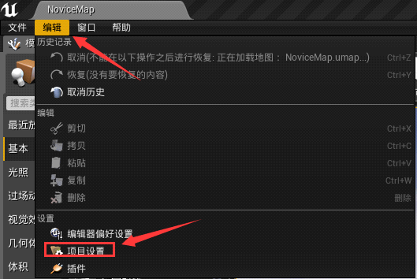
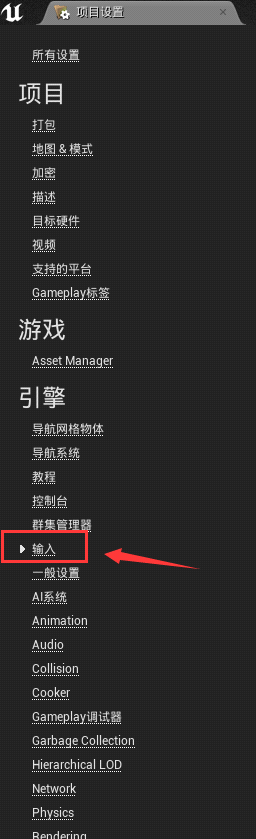
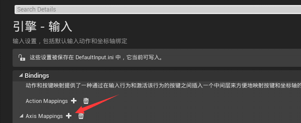
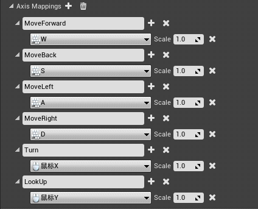
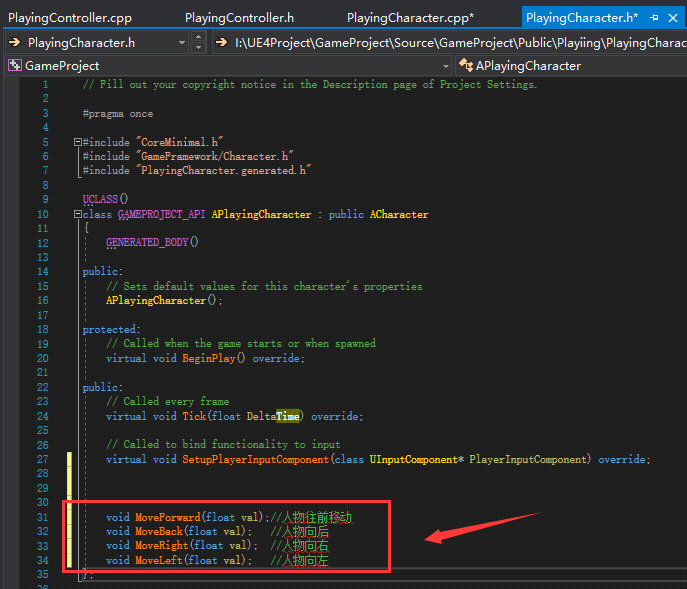
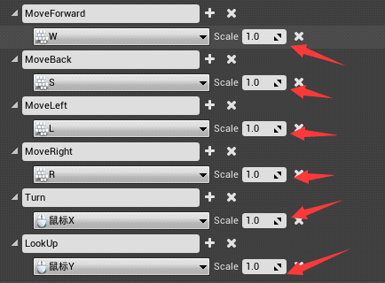
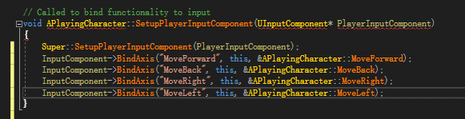
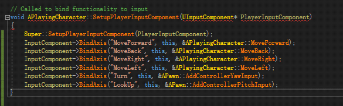

UE4设置人物移动和人物视角
本节我们先讲解 UE4 人物移动的设置，然后再讲解 UE4 人物视角的设置。
2) 选择“输入”：
3) 点击“AxisMappins” 的 添加按键输入，我们创建 6 个按键输入：
4) 更改按键和按键的名字，这里一个按键对应一个名字。你可以通过添加多个名字不同但是按键相同的方法去绑定不同的事件。
5) 设置完成后，我们打开 VS 编辑器，在“PlayingCharacter.h”文件下声明 4 个函数：
这四个函数就是我们要实现移动功能的函数，我们来到 .cpp 文件去实现这四个函数
那么这个 val 变量的值怎么来的呢，它在我们设置按键输入的时候就已经设定好了，默认值是 1。
写好这 4 个函数之后，我们还要进行按键绑定，把我们的函数和我们的按键绑定在一起。
在“SetupPlayerInputComponent(UInputComponent* PlayerInputComponent)”函数里，我们添加 4 个按键绑定。
InputComponent 是一个组件，它用来绑定按键输入。
第一个参数要和我们当初设置按键绑定的名字要一样，第二个参数是一个指针类型，我们直接给 this，第三个参数就是我们要绑定的函数。
AddControllerYawInput() 和 AddControllerPitchInput() 是 UE4 已经为我们封装好的移动视角的函数。
这三个变量组成了 UE4 里面所有物体的旋转方向，它是一个结构体叫 FRotator。
写完上面的代码后，点击编译，回到 UE4 点击 Play，我们会发现人物可以前后左右移动和左右上下看。
完整代码：
UE4 设置人物移动
1) 打开 UE4 编辑器，点击“编辑”然后点击“项目设置”：

2) 选择“输入”：

3) 点击“AxisMappins” 的 添加按键输入，我们创建 6 个按键输入：

4) 更改按键和按键的名字，这里一个按键对应一个名字。你可以通过添加多个名字不同但是按键相同的方法去绑定不同的事件。

5) 设置完成后，我们打开 VS 编辑器，在“PlayingCharacter.h”文件下声明 4 个函数：

这四个函数就是我们要实现移动功能的函数，我们来到 .cpp 文件去实现这四个函数
void APlayingCharacter::MoveForward(float val)
{
AddMovementInput(GetActorForwardVector(), val);
}
void APlayingCharacter::MoveBack(float val)
{
AddMovementInput(-GetActorForwardVector(), val);
}
void APlayingCharacter::MoveRight(float val)
{
AddMovementInput(GetActorRightVector(), val);
}
void APlayingCharacter::MoveLeft(float val)
{
AddMovementInput(-GetActorRightVector(), val);
}
AddMovementInput() 这个函数会根据第一个参数的值去移动角色，第二个参数是个浮点数，如果这个数是 1 的话，那么它会按照第一个参数的方向去添加，如果第二个参数是 -1 的话，那么会往第一个参数的反方向去添加。那么这个 val 变量的值怎么来的呢，它在我们设置按键输入的时候就已经设定好了，默认值是 1。

- GetActorForwardVector() 是在世界空间中从此 A 角色获取前向的向量，它获取的是 X 轴的向量。
- GetActorRightVector() 同上，它获取的是 Y 轴的向量。
写好这 4 个函数之后，我们还要进行按键绑定，把我们的函数和我们的按键绑定在一起。
在“SetupPlayerInputComponent(UInputComponent* PlayerInputComponent)”函数里，我们添加 4 个按键绑定。

InputComponent 是一个组件，它用来绑定按键输入。
第一个参数要和我们当初设置按键绑定的名字要一样，第二个参数是一个指针类型，我们直接给 this，第三个参数就是我们要绑定的函数。
UE4 设置人物角色
我们同样在 SetupPlayerInputComponenet 函数中写入我们控制视角的代码。

AddControllerYawInput() 和 AddControllerPitchInput() 是 UE4 已经为我们封装好的移动视角的函数。
FRotator
- Yaw 表示 摇头 就是绕 Z 移动；
- Pich 表示 点头 就是绕 Y 移动；
- Roll 你可以想象成左右晃脑，绕 X轴运动。
这三个变量组成了 UE4 里面所有物体的旋转方向，它是一个结构体叫 FRotator。
写完上面的代码后，点击编译，回到 UE4 点击 Play，我们会发现人物可以前后左右移动和左右上下看。
完整代码：
APlayingCharacter.h
// Fill out your copyright notice in the Description page of Project Settings.
#pragma once
#include "CoreMinimal.h"
#include "GameFramework/Character.h"
#include "PlayingCharacter.generated.h"
UCLASS()
class GAMEPROJECT_API APlayingCharacter : public ACharacter
{
GENERATED_BODY()
public:
// Sets default values for this character's properties
APlayingCharacter();
protected:
// Called when the game starts or when spawned
virtual void BeginPlay() override;
public:
// Called every frame
virtual void Tick(float DeltaTime) override;
// Called to bind functionality to input
virtual void SetupPlayerInputComponent(class UInputComponent* PlayerInputComponent) override;
void MoveForward(float val);//人物往前移动
void MoveBack(float val); //人物向后
void MoveRight(float val); //人物向右
void MoveLeft(float val); //人物向左
};
APlayingCharacter.Cpp
// Fill out your copyright notice in the Description page of Project Settings.
#include "PlayingCharacter.h"
// Sets default values
APlayingCharacter::APlayingCharacter()
{
// Set this character to call Tick() every frame. You can turn this off to improve performance if you don't need it.
PrimaryActorTick.bCanEverTick = true;
}
// Called when the game starts or when spawned
void APlayingCharacter::BeginPlay()
{
Super::BeginPlay();
}
// Called every frame
void APlayingCharacter::Tick(float DeltaTime)
{
Super::Tick(DeltaTime);
}
// Called to bind functionality to input
void APlayingCharacter::SetupPlayerInputComponent(UInputComponent* PlayerInputComponent)
{
Super::SetupPlayerInputComponent(PlayerInputComponent);
InputComponent->BindAxis("MoveForward", this, &APlayingCharacter::MoveForward);
InputComponent->BindAxis("MoveBack", this, &APlayingCharacter::MoveBack);
InputComponent->BindAxis("MoveRight", this, &APlayingCharacter::MoveRight);
InputComponent->BindAxis("MoveLeft", this, &APlayingCharacter::MoveLeft);
InputComponent->BindAxis("Turn", this, &APawn::AddControllerYawInput);
InputComponent->BindAxis("LookUp", this, &APawn::AddControllerPitchInput);
}
void APlayingCharacter::MoveForward(float val)
{
AddMovementInput(GetActorForwardVector(), val);
}
void APlayingCharacter::MoveBack(float val)
{
AddMovementInput(-GetActorForwardVector(), val);
}
void APlayingCharacter::MoveRight(float val)
{
AddMovementInput(GetActorRightVector(), val);
}
void APlayingCharacter::MoveLeft(float val)
{
AddMovementInput(-GetActorRightVector(), val);
}
关注公众号「站长严长生」，在手机上阅读所有教程，随时随地都能学习。内含一款搜索神器，免费下载全网书籍和视频。

微信扫码关注公众号